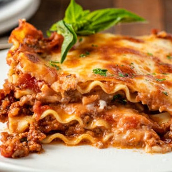

This classic lasagna recipe is made with an easy meat sauce as the base. Layer the sauce with noodles and
cheese, then bake until bubbly! This is great for feeding a big family and freezes well, too.

What you will need:
2 teaspoons extra virgin olive oil
1 pound ground beef chuck
1/2 medium onion, diced (about 3/4 cup)
2 cloves garlic
1 can crushed tomatoes
500gr of linguini
Instructions
Put pasta water on to boil:
Put a large pot of salted water (1 tablespoon of salt for every 2 quarts of water) on the stovetop on high
heat. It can take a while for a large pot of water to come to a boil (this will be your pasta water), so
prepare the sauce in the next steps while the water is heating.
Brown the ground beef:
In a large skillet heat 2 teaspoons of olive oil on medium-high heat. Add the ground beef and cook until it is
lightly browned on all sides. Remove the beef with a slotted spoon to a bowl. Drain off all but a tablespoon of
fat.
Boil the pasta:
By now the salted water you started heating in step one should be boiling. Add the dry lasagna noodles and cook
them to al dente, per package directions. (Note noodles may be cooked in advance.)
Stir often to prevent from sticking. Make sure that water remains at a full rolling boil during the entire
cooking to prevent noodles from sticking.
When ready, drain in a colander and rinse with cool water, gently separating any noodles that may be sticking
together.
Spread a little olive oil on a large rimmed baking sheet, and lay out the cooked noodles on this sheet, turning
them over so that they get coated with a little of the olive oil. This will prevent them from sticking together.
:max_bytes(150000):strip_icc():format(webp)/Simply-Recipes-Best-Classic-Lasagna-Method-1-a4ad6c5e70b54eb6b56ff2f80594e323.jpg)
:max_bytes(150000):strip_icc():format(webp)/Simply-Recipes-Best-Classic-Lasagna-Method-6-79889a7ce529442d8e600b51bb08061a.jpg)